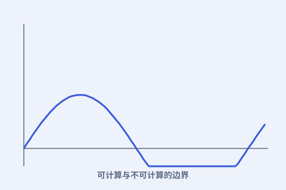

一、什么是“能算”
若一个问题存在一套明确步骤（算法）总能给出答案，它就是“可计算”的。图灵机给出了这套定义。

二、对角线论证
图灵用类似“对角线”的思路构造出一个反例：把所有程序列出来，再做出一个谁都不等的程序，从而证明不可能有“万能判定程序”。
三、停机问题
停机问题问：给定一段程序，它最终会停，还是会永远循环？图灵证明没有通用算法能回答这个问题。
四、极限也是财富
知道“哪些算不出”，反而帮我们避开徒劳、把精力放在可解之处。极限定义了计算的版图。
若一个问题存在一套明确步骤（算法）总能给出答案，它就是“可计算”的。图灵机给出了这套定义。

图灵用类似“对角线”的思路构造出一个反例：把所有程序列出来，再做出一个谁都不等的程序，从而证明不可能有“万能判定程序”。
停机问题问：给定一段程序，它最终会停，还是会永远循环？图灵证明没有通用算法能回答这个问题。
知道“哪些算不出”，反而帮我们避开徒劳、把精力放在可解之处。极限定义了计算的版图。